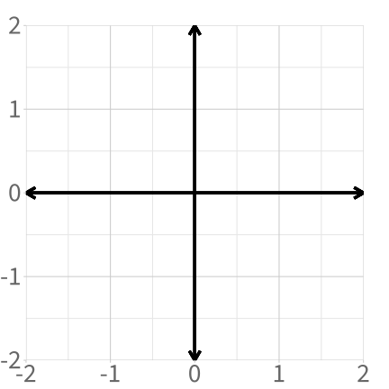
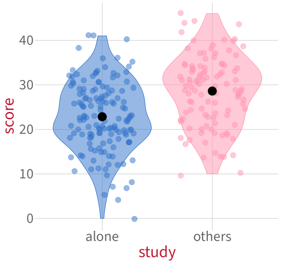
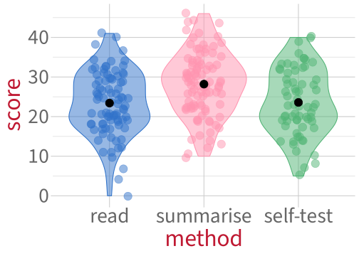

Categorical predictors and treatment coding
Data Analysis for Psychology in R 2
Warm-up activity: Line drawing
Draw each of the lines that’s defined by the given intercept and slope.
Line 1:
- Intercept is 0
- Slope is 1
Line 2:
- Intercept is 1
- Slope is –1

Line 3:
- Intercept is –1
- Slope is 2
What does it mean to represent levels as 0 or 1?
To illustrate: Here are test scores from students who studied either alone (blue) or with others (pink).
Code
set.seed(1)
p_viol_bin <- score_data |>
ggplot(aes(x = study, y = score, fill = study, colour = study)) +
geom_violin(alpha = 0.5) +
geom_jitter(alpha = 0.5, size = 5, width = 0.3) +
theme(
legend.position = 'none',
panel.grid.minor = element_blank()
) +
stat_summary(fun = mean, geom = 'point', colour = 'black', size = 8, show.legend = FALSE) +
scale_colour_manual(values = pal) +
scale_fill_manual(values = pal) +
NULL
p_viol_bin
Code
xlim_lower <- -2.2
xlim_upper <- 2.2
ylim_lower <- -15
ylim_upper <- 55
set.seed(1) # seed for constant jitter
p_xy_study <- score_data |>
ggplot(aes(x = study_num, y = score)) +
geom_jitter(aes(colour = study), alpha = 0.25, width = 0.1, size = 5) +
scale_x_continuous(limits = c(xlim_lower, xlim_upper), expand = c(0, 0)) +
scale_y_continuous(limits = c(ylim_lower, ylim_upper), expand = c(0, 0)) +
geom_segment(x = xlim_lower, xend = xlim_upper, y = 0, yend = 0,
arrow = arrow(ends = 'both', length = unit(12, 'pt')), colour = 'black') +
geom_segment(x = 0, xend = 0, y = ylim_lower, yend = ylim_upper,
arrow = arrow(ends = 'both', length = unit(12, 'pt')), colour = 'black') +
stat_summary(fun = mean, geom = 'point', colour = 'black', size = 8, show.legend = FALSE) +
scale_colour_manual(values = pal) +
theme(
panel.grid.minor = element_blank(),
legend.position = 'bottom'
) +
labs(
x = 'study (in numeric space)'
) +
guides(colour = guide_legend(override.aes = list(alpha = 1))) +
NULL
p_xy_study
What does it mean to represent levels as 0 or 1?
To illustrate: Here are test scores from students who studied either alone (blue) or with others (pink).
Code
set.seed(1)
p_viol_bin +
# stat_summary(colour = 'black', fun = mean, geom = 'point', size = 2) +
# geom_segment(aes(x = 'alone', xend = 'others', y = mean_alone, yend = mean_others), colour = 'black') +
NULL
Code
set.seed(1) # seed for constant jitter
p_xy_study <- p_xy_study +
geom_abline(slope = mean_others - mean_alone, intercept = mean_alone, colour = 'black', linewidth = 2) +
NULL
p_xy_study
A linear model will fit a line to this data.
The line’s intercept will be the same as the mean of either alone or others. Which one? Why?
TODO WOO
How do we describe this line?
Using our mathematical toolkit:
\[ \text{score} = \beta_0 + (\beta_1 \cdot \text{study}_{\text{others}}) + \epsilon \]
\(\beta_0\): intercept, mean of alone (the level represented as 0, which we call the reference level):
mean_alone[1] 22.8\(\beta_1\): slope, the difference between mean of others (represented as 1) and mean of alone (represented as 0):
mean_others - mean_alone[1] 5.76\(\epsilon_i\): error for each individual data point \(i\)

Changing the reference level
If reference level = alone:

If reference level = others:

When others is the reference level (that is, the level represented as 0):
- What does the intercept represent?
- What does the slope represent?
- Why is the slope negative now, when before it was positive?
TODO WOO
New data: Study method
Code
set.seed(1)
p_viol <- score_data |>
ggplot(aes(x = method, y = score, fill = method, colour = method)) +
geom_violin(alpha = 0.5) +
geom_jitter(alpha = 0.5, width = 0.2, size = 5) +
theme(legend.position = 'none') +
scale_fill_manual(values = pal) +
scale_colour_manual(values = pal) +
stat_summary(fun = mean, geom = 'point', colour = 'black', size = 5) +
NULL
p_viol
Code
set.seed(1)
p_viol_lines <- p_viol +
# line from read to self-test:
geom_segment(colour = 'black', aes(x = 'read', xend = 'self-test', y = mean_read, yend = mean_self), linewidth = 1) +
# line from read to summarise:
geom_segment(colour = 'black', aes(x = 'read', xend = 'summarise', y = mean_read, yend = mean_summ), linewidth = 1) +
NULL
p_viol_lines
How do we fit a line to data from three groups?
- It’s impossible to draw one single straight line through all three group means.
- The smallest number of straight lines that connect all three group means is two.
- For this reason, we’re going to use two predictors. These two predictors are called “dummy variables”.
- In general, for a categorical predictor with \(k\) levels, we’ll use \(k-1\) dummy variables.
Dummy variables let us extend treatment coding to >2 levels
First dummy variable: self-test vs. read.

Second dummy variable: summarise vs. read.

What does each coefficient mean? (1)

Coefficients:
Estimate Std. Error t value Pr(>|t|)
(Intercept) 23.414 0.866 27.03 < 2e-16 ***
methodsummarise 4.782 1.193 4.01 0.000081 ***
methodself-test 0.162 1.319 0.12 0.9 (Intercept) aka \(\beta_0\): The mean score for the reference level (read) is 23.41 points.
mean_read[1] 23.4- Null hypothesis: The mean score for the reference level (
read) is equal to zero. - \(p\)-value: the probability of observing an intercept of 23.414 (or more extreme), assuming that the true intercept is zero.
Can we reject this null hypothesis?

If we care about differences between study methods, is this null hypothesis interesting?
What does each coefficient mean? (2)

Coefficients:
Estimate Std. Error t value Pr(>|t|)
(Intercept) 23.414 0.866 27.03 < 2e-16 ***
methodsummarise 4.782 1.193 4.01 0.000081 ***
methodself-test 0.162 1.319 0.12 0.9 methodsummarise aka \(\beta_1\): The difference between the estimated average score for summarise and the estimated average score for read is 4.78 points.
mean_summ - mean_read[1] 4.78- Null hypothesis: This difference is equal to zero.
- \(p\)-value: the probability of a difference of 4.78 (or more extreme), assuming that the true difference is zero.
Can we reject this null hypothesis?
If we care about differences between study methods, is this null hypothesis interesting?
What does each coefficient mean? (3)

Coefficients:
Estimate Std. Error t value Pr(>|t|)
(Intercept) 23.414 0.866 27.03 < 2e-16 ***
methodsummarise 4.782 1.193 4.01 0.000081 ***
methodself-test 0.162 1.319 0.12 0.9 methodself-test aka \(\beta_2\): The difference between the estimated average score for self-test and the estimated average score for read is 0.16 points.
mean_self - mean_read[1] 0.162- Null hypothesis: This difference is equal to zero.
- \(p\)-value: the probability of a difference of 0.16 (or more extreme), assuming that the true difference is zero.
Can we reject this null hypothesis?
If we care about differences between study methods, is this null hypothesis interesting?
Visualising the new dummy variables
First new dummy variable:
read vs. summarise.

Second new dummy variable:
self-test vs. summarise.

- Is the slope of the first dummy variable positive or negative?
- Is the slope of the second dummy variable positive or negative?
- Will the coefficient estimates be the same or different compared to our previous model?
This week
Tasks:
 Work on exercises in labs
Work on exercises in labs
 Complete the weekly quiz
Complete the weekly quiz
Get support:
 Consult the flash cards
Consult the flash cards
 Ask questions anonymously on Piazza
Ask questions anonymously on Piazza
 We really like seeing you in office hours!
We really like seeing you in office hours!